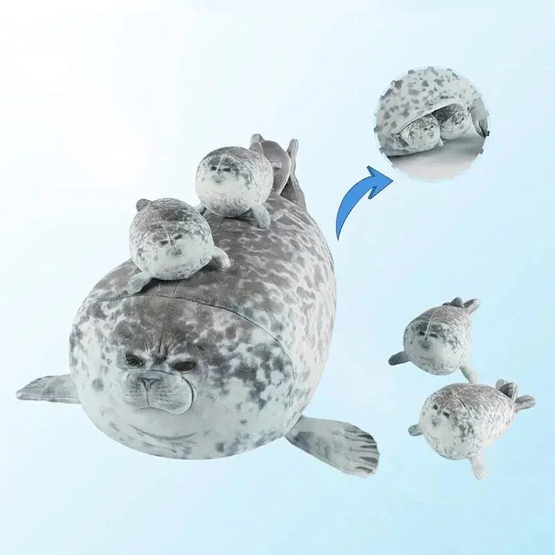

Regalos para el amigo invisible de menos de 15, 20 y 30 € (que sí gustan)

El amigo invisible tiene una regla de oro: el regalo tiene que hacer gracia o ser útil, nunca dejar a nadie con cara de «¿y esto qué es?». La otra regla es el presupuesto, que casi siempre ronda los 15, 20 o 30 euros. Aquí tienes ideas que funcionan para cada uno.
Si todavía no habéis hecho el sorteo, puedes hacerlo gratis en un minuto con nuestro sorteo de amigo invisible por WhatsApp.
Menos de 15 €: pequeños y que siempre aciertan
- Una lámpara que proyecta lunas y estrellas. Llena la habitación de estrellas de colores. Gusta a niños y a adultos, y queda de quitamiedos o de luz de ambiente: lámpara proyector de luna y estrellas.
- Algo de decoración que se use cada año, como un calendario de madera de cuenta atrás. Es un regalo que vuelve a salir de la caja cada diciembre.
Menos de 20 €: el presupuesto más habitual
- Un proyector de aurora boreal. Convierte el techo en un cielo de colores con un mando: proyector de galaxia y aurora. Es de esos regalos que todo el mundo acaba probando en la cena.
- Gorros de Papá Noel para todo el grupo. Si el amigo invisible es en la oficina, un pack de 4 gorros da juego para la foto.
Menos de 30 €: para quedar como un rey
- El peluche de foca gigante. Una mamá foca de 40 cm, blandita como un cojín, con cuatro crías: peluche de foca con crías. Arrasa en redes y gusta a todas las edades.
- Una manta de franela navideña para el sofá, ideal si el regalo es para los abuelos o para alguien friolero: manta de 130 × 150 cm.
- Flores que no se marchitan: dos ramos de bloques para montar, cada uno con su cúpula: 2 ramos de flores de bloques. Te quedas uno y regalas el otro, o regalas los dos.
Tres trucos para acertar
- Pregunta sin preguntar. Mira qué tiene en la mesa del trabajo o qué comparte en redes: ahí están sus gustos.
- Mejor útil que gracioso, salvo que el grupo sea de bromas. Un regalo gracioso dura una noche; uno útil, todo el invierno.
- Pide con tiempo. Con envío gratis, los pedidos llegan en 7-15 días. Para tenerlo antes de Nochebuena, pide antes del 9 de diciembre; para Reyes, antes del 18 de diciembre.